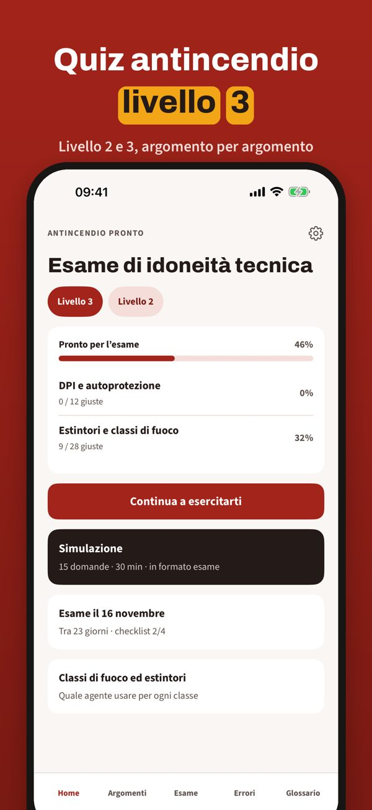
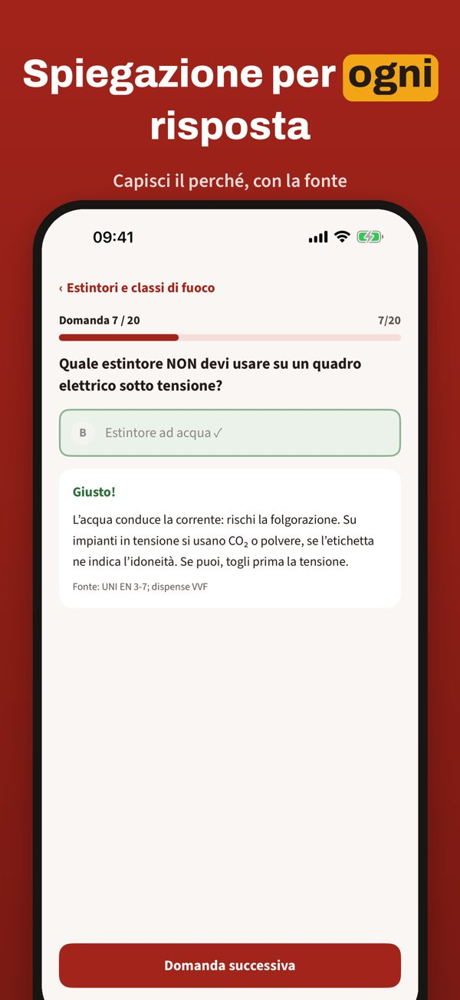
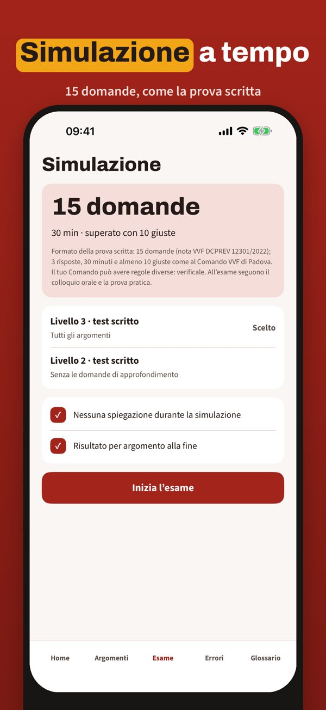

Quiz esame addetto livello 2–3
Antincendio Pronto ti aiuta a prepararti all’esame di idoneità tecnica per addetto antincendio di livello 2 e 3.



Puoi esercitarti con 20 domande, il glossario e la checklist senza acquisto. La versione completa è un acquisto unico che sblocca tutte le domande, le simulazioni e le statistiche. Nessun abbonamento.
Antincendio Pronto è indipendente e non è collegata ai Vigili del Fuoco né ad enti di formazione. L’esame si sostiene presso il Comando VVF.
Terms of Use (EULA): https://www.apple.com/legal/internet-services/itunes/dev/stdeula/
Privacy: https://baytechbv.github.io/privacy/antincendio-it/